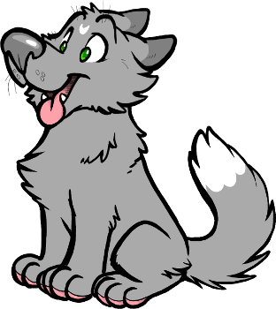
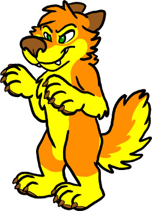
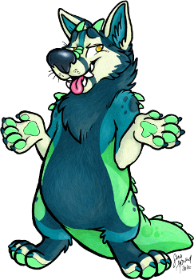
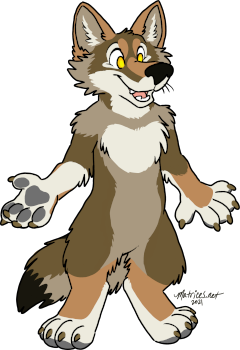
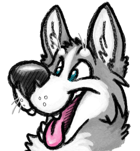

Thank you for taking interest in learning about my Original Characters! This is the page for them! For now I use a few off-site locations to collect art I have recieved for them, and some of the various galleries for photos of the fursuit versions. I hope you enjoy seeing my critters! Eventually I hope to expand this page when I have the chance to write and share more about them more in the future.
Interested in drawing my characters? Did I commission you for art at some point? It is important to know I prefer to limit how my characters are depecticed and how they are used in advertising. Learn more about that here:
Matrices a happy waggy doggy, she is the cute little grey dog that you have been seeing around Matrices.net! Her personality is silly, helpful, supportive, excited, doglike, and friendly. Matrices is my 'me' character, she represents me in my drawings and online. She has been my fursona character since 1999.
A partial fursuit version by me was made recently, she's still a Work In Progress eventually to be a fullsuit! I also have a full fursuit of Matrices is made by Yoshinomi. There have also been previous fursuits for this character that are made by me, they are no longer active.
Meet Matrices Matrices' Art Gallery Matrices' Fursuit Photo Gallery


My oldest furry character, Mukilteo is an orange and yellow dog creature. He's a lot like the mean older brother of the bunch, the sort that is terrible no good and bad. Except he HAS to be good because otherwise he gets the shock! zzZap! His current efforts are spent fighting for Couch Rights in the name of his political movement "Dog Party" ...because bad dogs have no rights, so they have to fight extra hard!
My fursuit for Mukilteo is made by Made Fur You.
Meet Mukilteo Mukilteo's Art Gallery Mukilteo's Fursuit Photo Gallery
He is a cute and chubby critter. Sorta dog sorta monster, he's not sure what he is either and that's OK. He is what he is and he is confident and happy about it.
My fursuit for Bonk has his head made by Battitude, the rest built by me.


Chelan is a sassy coyote adventurer with an affinity for selfies. She is an opportunistic trickster and pretty sneaky when the surroundings present the chance. She also has a bold and sassy streak. All good traits to be proud of, according to her. She is the character currently featured on the homepage of Matrices.net. She is also the character you will most often find me using as an avatar in VRChat.
My fursuit for Chelan was built by me, on a resin base by Beetlecat Originals, with teeth and tongue by Crystumes. She recieved a new nose by Mythimorph Labs in 2021.
Meet Chelan Chelan's Art Gallery Chelan's Fursuit Photo Gallery
Ultra dopey husky and friend of all, Beef Jerky is an Alaskan Husky (the mutt of huskies, not whole Siberian but definitely a Husky). Goofy, excitable, doglike, playful, will-get-underfoot-somehow. Simultaneously interested in everything, while also not. Friends include stuffed animals, inanimate objects, and you.
My fursuit for Beef Jerky was built by me. A new version will be made someday, but the suit version of the character is no longer active for now.

© Sara Howard.